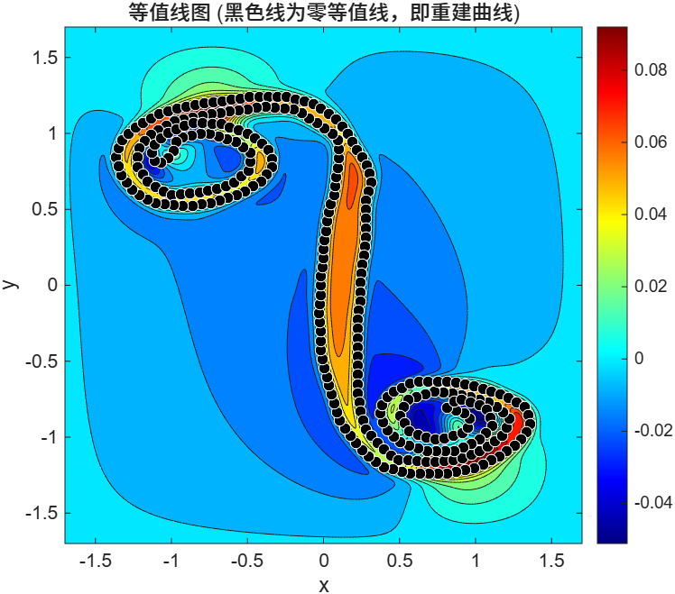

Poisson Surface Reconstruction

Overview
In this project, I studied the principles of the paper "Poisson Surface Reconstruction" and conducted some 2D experiments in MATLAB based on these principles. Our goal was to find a suitable method to assign a normal to each point in the input point cloud. The principles provided in the paper are responsible for processing point clouds with normals and generating reconstructed curves/surfaces. I will briefly introduce the principles of this paper below.
Note: This project is still ongoing, and we have not yet found a suitable way to assign normals to all points.
The Continuous Indicator Function
The core objective is to compute a 3D indicator function, denoted as $\chi_M$, which equals 1 inside the solid model and 0 outside. The mathematical gradient of this function, $\nabla\chi_M$, is exactly zero everywhere except at the surface boundary. At the boundary, the gradient acts as a vector field pointing inward, perfectly matching the inward surface normal $\vec{N}_{\partial M}(p)$.
Applying the Smoothing Filter
Because a raw, step-like indicator function yields infinite gradient values at the surface, we must convolve it with a continuous smoothing filter $\tilde{F}$. The paper proves that the gradient of this smoothed indicator function precisely equals the smoothed surface normal field:
$$\nabla(\chi_{M}*\tilde{F})(q_{0})=\int_{\partial M}\tilde{F}_{p}(q_{0})\vec{N}_{\partial M}(p)dp$$
Discrete Approximation from Point Clouds
We do not have the continuous surface geometry $\partial M$ to calculate this integral. Instead, we use the input point cloud $S$. By assigning a small area weight $|\mathcal{P}_{s}|$ to each sampled point $s$, we approximate the continuous integral as a discrete summation. This yields a computable vector field $\vec{V}(q)$ based on the input normals $s.\vec{N}$:
$$\vec{V}(q)\equiv\sum_{s\in S}|\mathcal{P}_{s}|\tilde{F}_{s.p}(q)s.\vec{N}$$
The Spatial Poisson Problem
We now seek a scalar function $\tilde{\chi}$ whose gradient optimally matches our approximated vector field $\vec{V}$. Because $\vec{V}$ is constructed from noisy, discrete data, it is not perfectly integrable (not curl-free). We apply the divergence operator ($\nabla\cdot$) to both sides to find the best least-squares scalar potential. This forms the central Poisson equation of the algorithm:
$$\Delta\tilde{\chi}=\nabla\cdot\vec{V}$$
Isosurface (Contour) Extraction
After solving the Poisson equation for the scalar field $\tilde{\chi}$, we must define the final geometric boundary. We evaluate $\tilde{\chi}$ at all original sample positions and compute their arithmetic average to define a specific isovalue $\gamma$:
$$\gamma=\frac{1}{|S|}\sum_{s\in S}\tilde{\chi}(s.p)$$
The final reconstructed curve or surface is extracted by finding the exact contour where the scalar field equals this specific $\gamma$ value.